Planning an elopement should feel like the opposite of planning a wedding: less spreadsheet, more anticipation. There are really only two decisions that are yours to make — how you want the day to feel, and roughly when — and everything else is ours to carry. This is the whole roadmap, from first idea to the moment you say the words, laid out simply so you always know what happens next and how little you actually have to worry about.
An elopement is a very small, intentional wedding — usually just the two of you, sometimes a handful of the people you love most. Instead of a big party and a long guest list, the day is built entirely around the two of you and a place that means something. It is not about running away; it is a modern, deliberate way to marry, where the budget and the attention go into the experience and the photographs rather than a venue and a seating chart. Everything below exists to make that simple to pull off.
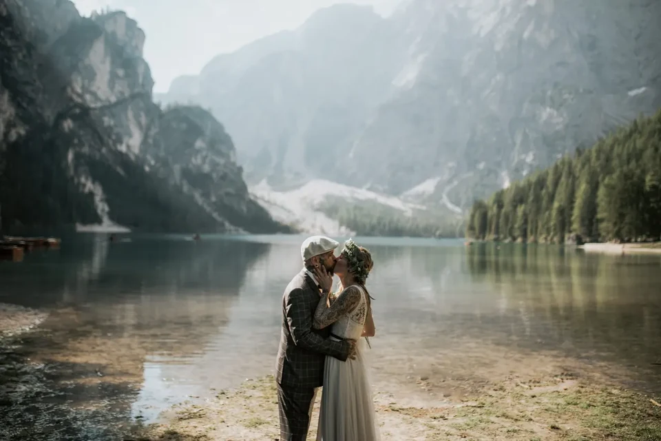
The freedom is the point. With no reception to seat and no schedule to please, the day bends entirely around you: you can marry at 6 a.m. on a summit, spend an hour saying nothing, swim in a cold lake in your dress, or hike to a second spot for sunset. Couples are often surprised by how emotional a tiny wedding turns out to be — with no audience to perform for, the words come out real, and the whole thing feels less like an event and more like the truest morning of your life.
Start with the feeling, not the pin on the map. Do you picture total solitude on a high ridge, a mirror-still lake at first light, a green pass with a little chapel, or a summit you fly to? Once we know the mood, the location almost chooses itself. When you are ready to look at actual places, our guide to the most beautiful spots in the Dolomites and the wider best locations across the Alps are the perfect next read — but you do not have to decide alone, and you do not have to decide first.
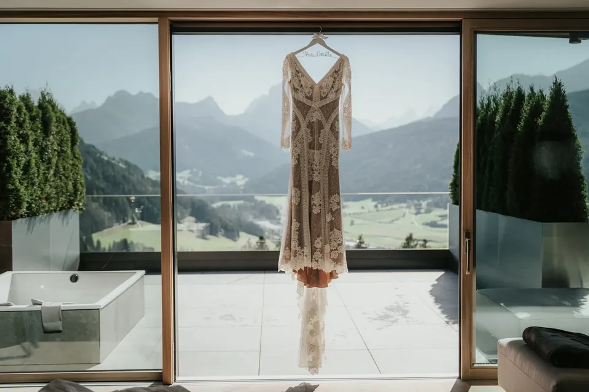
It helps to talk in pictures rather than logistics. Send us the images that stopped you scrolling, tell us whether you want to be warm or windswept, alone or with your closest people, gentle underfoot or high and exposed. From that we can already sketch two or three very different days — a lakeshore at dawn, a green pass at dusk, a flown-in summit — and you choose the one that makes your chest tighten. The place is just the frame; the feeling is the picture.
The second choice is when. Summer opens every road, lift and hut and gives the warmest, greenest days; autumn brings golden larches and thin crowds; winter is silent, white and dramatic for the bold. Give us a rough range rather than a single fixed day if you can — it lets us chase the best weather and light. This is also where you decide sunrise or sunset, which quietly shapes the whole day. A range plus a mood is all we need to start holding the good mornings for you.
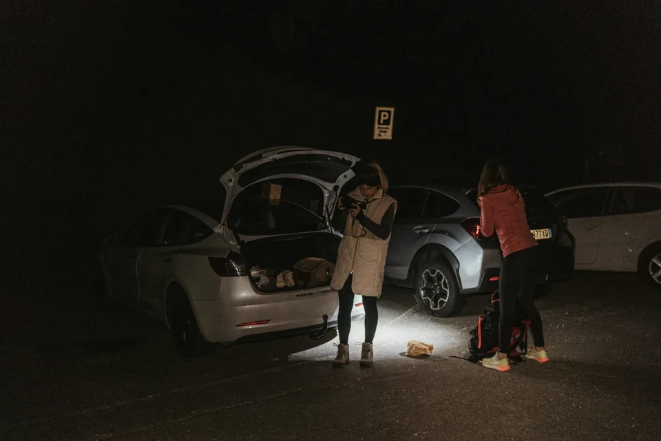
Here is the one piece of real paperwork, and it is simpler than it sounds. Most couples choose a symbolic ceremony in the mountains — your vows, a celebrant, the two of you — and sign the legally binding papers at their home registry before or after the trip. The alternative is a legal civil marriage abroad: eloping in Austria can be done as a civil ceremony, in some regions even outdoors, while in Italy the legal act happens only at a registry office and the mountain ceremony stays symbolic. We tell you exactly which documents you need for your countries and when to start.
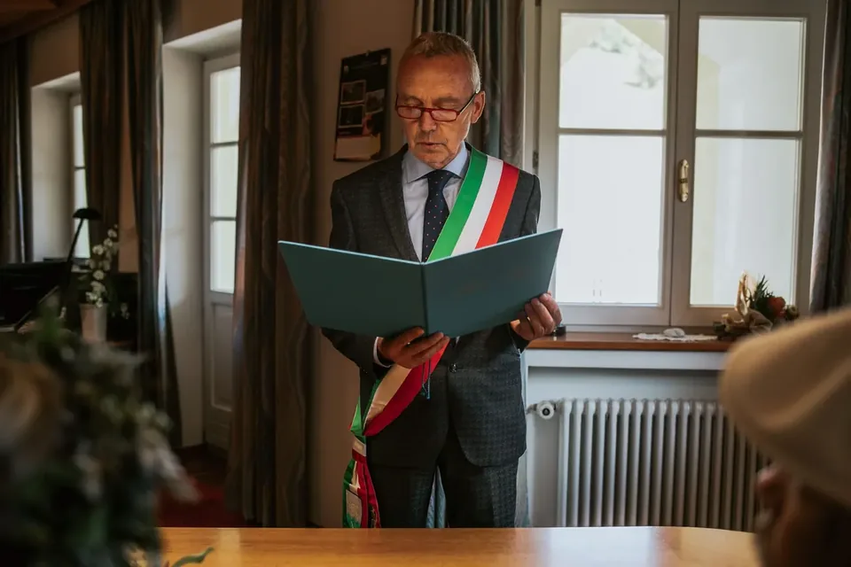
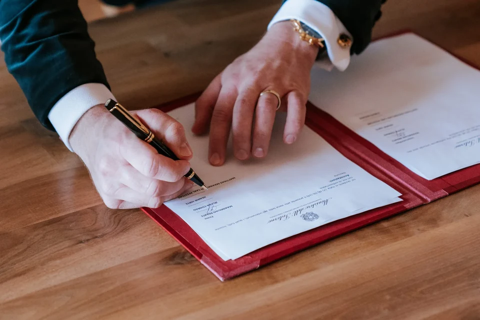
Do not let the word legal scare you: in practice it is a short list of documents and a bit of lead time, and we have walked dozens of couples through it. For a symbolic ceremony there is almost nothing to do beyond marrying at home whenever suits you. For a civil marriage abroad, the paperwork — a certificate of no impediment, birth certificates, sometimes an apostille and sworn translations — simply needs to be started a few months ahead. We give you a country-specific checklist so you never wonder whether you have missed a form.
With the big two decided, the rest are the good bits: the dress or suit, hair and make-up, the vows you write, the flowers, the rings. None of it needs to be a project. We bring a trusted hair-and-make-up artist to wherever you are getting ready, arrange a florist who understands mountain conditions, and help you shape vows that sound like you. The small, handwritten, personal things are what the day is really made of — and they are the easiest to get right with a little guidance.
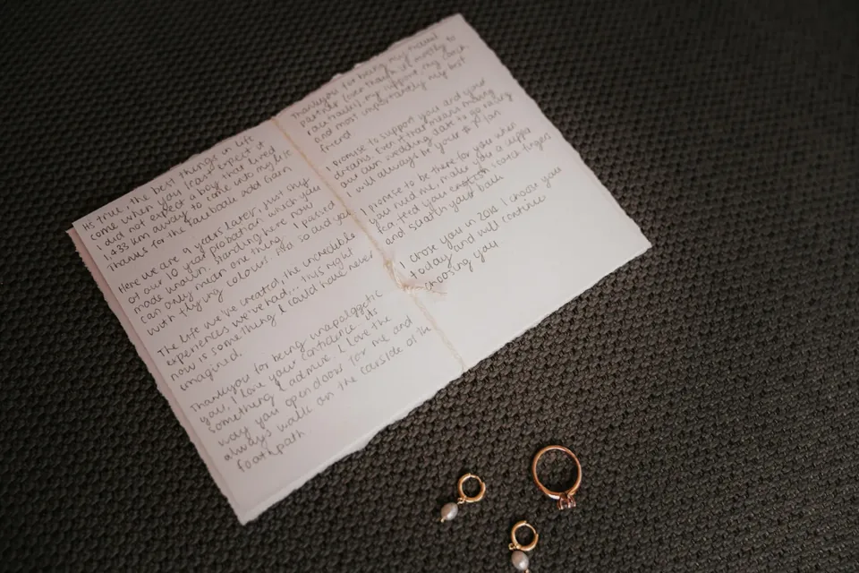
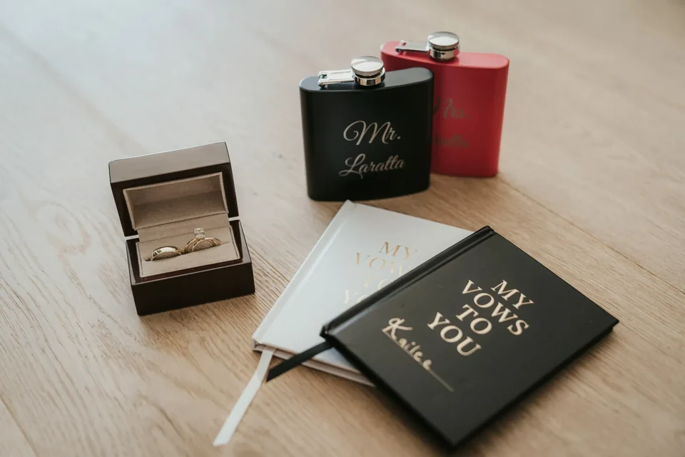
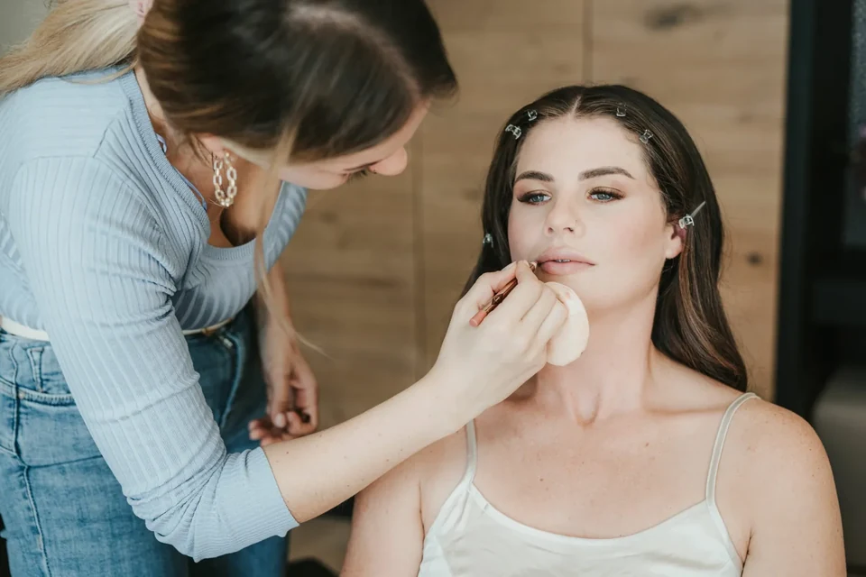
A word on the things couples forget. Bring layers for the cold at the top, and shoes you can actually walk in with the pretty pair in a bag. Write your vows earlier than you think you need to. Decide who holds the rings on the walk. Eat something before a sunrise start. None of this is hard, but it is the difference between a morning that flows and one that snags — so we send a short, human checklist a few weeks out, and we carry spares of the small things that always get left on a kitchen table.
This is where an elopement stops being a template. Want a celebrant to lead a truly personal ceremony? A film as well as photographs? A pizza carried to a summit, a cold-water swim, a first dance on an empty ridge? We build the day around your ideas, not a package. Two of our favourites: arriving by helicopter on a remote peak, and, for couples who want the whole story, proposing here first and coming back to marry. If you can picture it, tell us — the wilder ideas are usually the ones we love most.
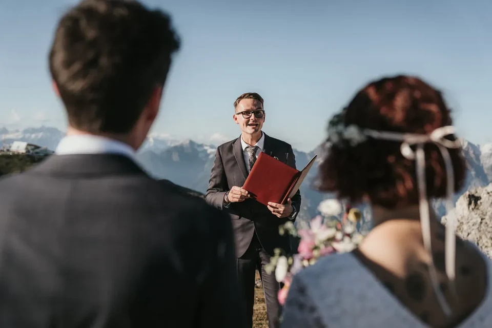
9–6 months out: settle the feeling, the season and a date range, and reserve us. If you want a legal marriage abroad, this is when the paperwork starts. 6–3 months: lock the location and any add-ons — celebrant, film, helicopter — and sort the dress, suit and rings. 3–1 months: hair and make-up, flowers, travel and where you will stay; we finalise the shot list and the route. The final weeks: we watch the forecast, confirm the exact timeline and hold a backup plan. The day: you show up; we run everything. It really is that short a list, because most of it sits with us.
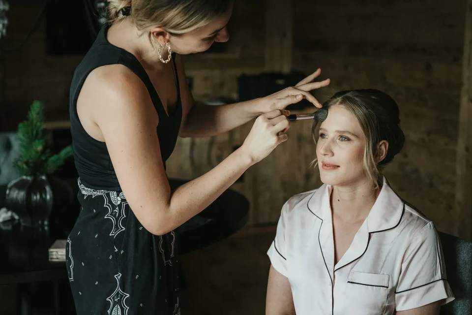
If your timeframe is shorter, do not count yourselves out. A symbolic ceremony can come together in a matter of weeks when a date and the weather line up, because there is no legal lead time to wait on. What a longer runway buys you is choice — the pick of the best dates, first refusal on the golden mornings, and time for a legal marriage if you want one. Tell us where you are on the calendar and we will tell you honestly what is still possible; the answer is more often yes than couples expect.
A few practical things sit under the beauty, and we handle all of them. Some places have access rules — the road to Lago di Braies needs a summer reservation, the Tre Cime is reached by a toll road, several areas are protected nature zones with limits on structures, and private drones are banned across much of the Dolomites. There are small costs beyond the packages, too: cable-car tickets, a landing fee at certain spots, a celebrant, flowers. We lay them all out plainly in advance so nothing is a surprise, and we book and confirm every one before your date.
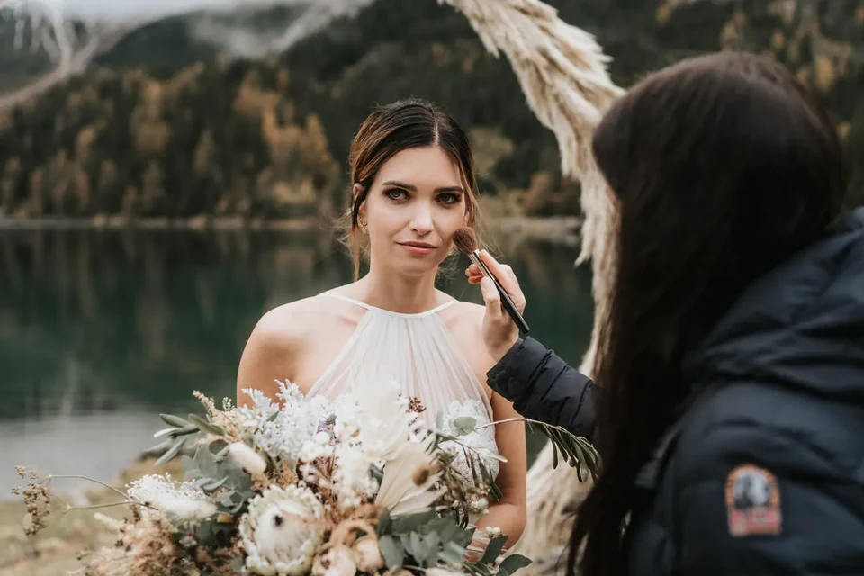
One more reassurance: none of these rules are yours to track. We hold a live picture of what is open, what needs booking and what each season allows, and we build it all into your plan so the admin is simply done. You will hear about it only as a short list of what to bring and where to be — the paperwork, the permits and the timings stay on our side of the desk.
Our packages start at around €6,000 and cover the photography, the planning, a scouting trip and your private online gallery. From there you can add what you want: hair and make-up, flowers, a celebrant, film, and up to full coordination of an entire day with accommodation and transfers. An elopement is usually far less than a traditional wedding, and the money is spent differently — on the experience, the location and the images that last, instead of a hall, a caterer and a headcount. We quote everything in one clear number so you always know where you stand.

Think of the number as buying time and certainty, not just photos. What you are really paying for is a team that already knows which permit to file, which morning the light will land, which hut has room and which road is open — the knowledge that turns a logistically fiddly foreign wedding into a calm one. Couples tell us afterwards that the value was not only the gallery, but never once feeling lost or rushed on the most important morning of their lives.
Here is how it usually flows. You get ready in calm — hair, make-up, a coffee, the dress — while we handle timing and transport. We reach the spot with light to spare, and the ceremony happens when the light is at its best: your words, the rings, a first kiss with the whole range as witness. Then portraits while it is quiet, a moment to simply stand and take it in, and a celebration to match — a hut breakfast, a picnic, a toast on the mountain. Because we plan generously, there is always time to breathe, and the day feels long in the best way.
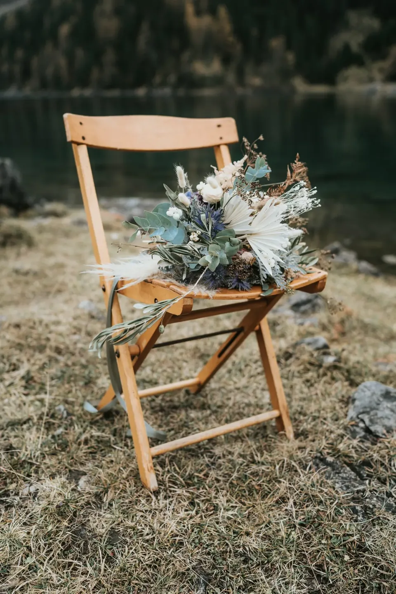
The best moments are almost never the planned ones. It is the laugh after a shaky first line of vows, the way you both go quiet when the sun finally hits the peaks, the walk back down when it has all sunk in. We plan the structure precisely so that these unplanned things have room to happen — we are not marching you between poses, we are giving you a whole morning together in a beautiful place and quietly photographing the truth of it. That is the entire craft.
If there is one thing to take from all of this, it is how little of it you have to carry. You bring the two of you, the feeling and a rough season; we bring the location knowledge, the permits, the local team, the timeline and the calm. We live in these mountains and plan elopements in them all year, so the things that would take you weeks of research take us a phone call. Tell us what you are dreaming of, and we will send back a simple plan and an honest answer — and then all that is left for you to do is turn up and get married.

Three to nine months is the comfortable range. Nine months gives you the pick of dates and time for a legal marriage abroad; three is plenty for a symbolic ceremony with the paperwork done at home. We have also pulled beautiful elopements together faster when a date opened up — tell us your timeframe and we will tell you honestly what fits.
No — that is the whole point of us. You make the two big choices, the feeling and the season, and we handle the rest: location scouting, permits and reservations, the celebrant or registrar, hair and make-up, flowers, transport and the timeline. You show up rested and get married; we carry the plan.
It can be, and there are two honest paths. Most couples hold a symbolic ceremony in the mountains and sign the legal papers at their home registry; that is the simplest route. A legally binding marriage is also possible — in Austria as a civil ceremony, in some regions even at an approved outdoor spot, while in Italy the legal act can only happen at a registry office. We point you to the right path for your countries.
Anywhere from none to around twenty. Most of our couples come as just the two of them, or with a handful of the people who matter most; above roughly ten the logistics start to change — transport, huts and permits all get more involved. We are happy to plan either, and we will always be honest about what changes as the group grows.
Our packages start at around €6,000 and include the photography, the planning, a scouting trip and your private online gallery. Larger packages add hair and make-up, flowers, film and full coordination, up to a whole day with accommodation and transfers. An elopement is usually far less than a big wedding — the budget goes into the experience and the images rather than a venue and a headcount.
Mountain weather is part of the deal, so we build for it: a flexible window, a backup morning where the trip allows, and a beautiful plan B location that works in worse light. Fog and a little rain are not the enemy either — some of the most atmospheric photographs we take happen in exactly that soft light. The only weather we truly avoid is the unsafe kind.
We use cookies for anonymous statistics (Google Analytics via Google Tag Manager) to improve this site. Analytics runs only with your consent. Privacy Policy